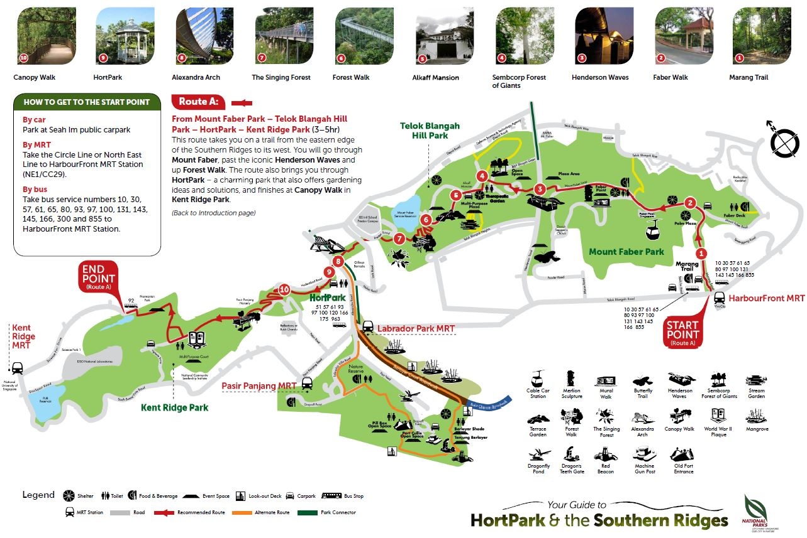
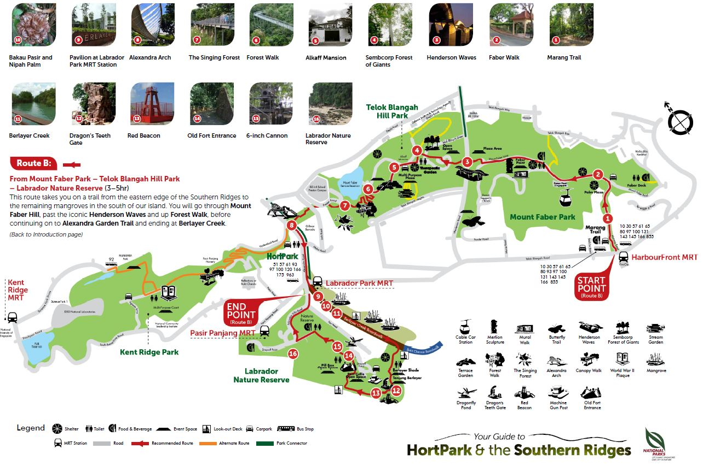
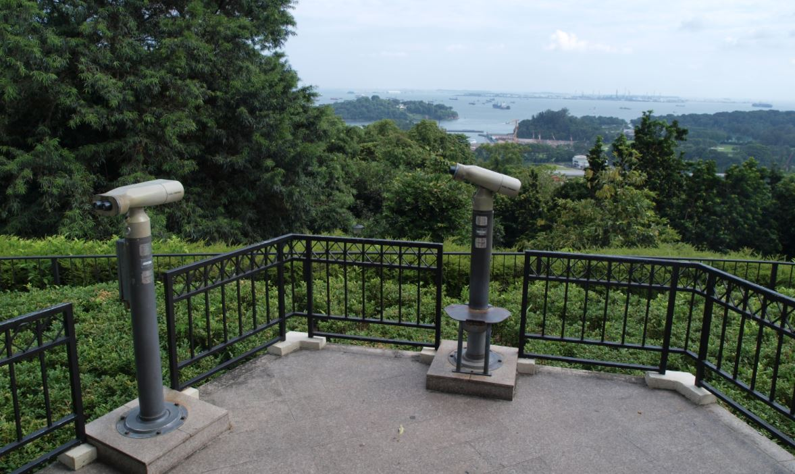
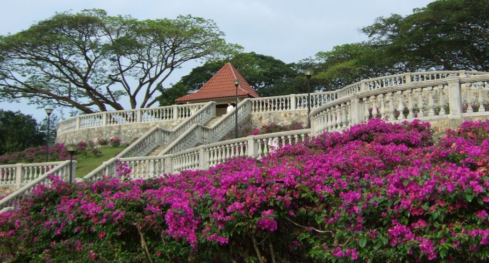
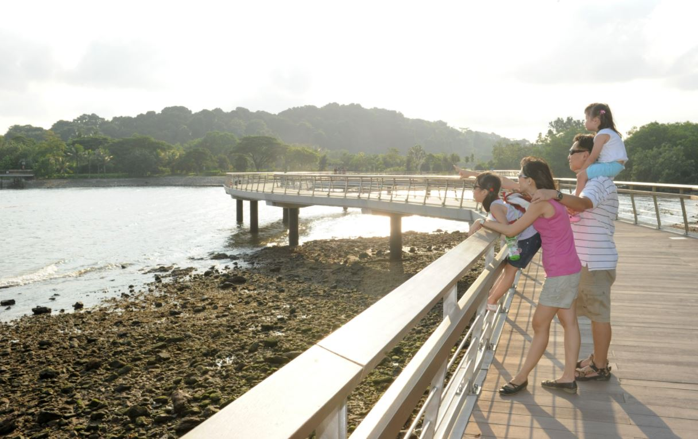

The Southern Ridges: A Myriad of Parks to Explore
Located at (you guessed it) the southern region of Singapore lies a 10 km stretch of greenery that connects several of Singapore’s most popular parks and gardens and is coupled by countless scenic views of both the forests and the city.
The Southern Ridges is made up of Mount Faber Park, Telok Blangah Hill Park, HortPark, Kent Ridge Park and Labrador Nature Reserve.
There are 2 main trekking routes to follow for the Ridges:
- Route A: From Mount Faber Park – Telok Blangah Hill Park – HortPark – Kent Ridge Park
- Route B - From Mount Faber Park – Telok Blangah Hill Park – Labrador Nature Reserve
Map of Route A
Map of Route B
A guide for the for the routes and key attractions can be found here.
Back to top
Park Information
1. Mount Faber Park
Mount Faber Park is one of the oldest parks in Singapore, with a size of 56 hectares. Originally named Telok Blangah Hill, it was renamed Mount Faber in July 1845, in honor of Captain Charles Edward Faber of the Madras Engineers, who built a narrow winding road to the summit for the installation of a signal station.
Enjoy a cable car ride between Mount Faber to Sentosa Island or visit one of the lookout points in the park and gaze through the telescopes for a panoramic view of the southern part of Singapore and the southern islands.
2. Telok Blangah Hill Park
Connecting Mount Faber Park to HortPark, Telok Blangah Hill Park brings you close to the secondary forests in the region.
It has the Forest Walk, which is a 1.3km long elevated pathway amongst the forests, as well as the Terrace Garden, which is a popular spot for wedding couples to take their photos – a picturesque destination for photographers!
3. Kent Ridge Park
A historical park where one of the last battles for Singapore was fought during World War II, Kent Ridge Park is a great place for families and history buffs to learn about the heritage of our nation.
It is an amazing location to catch the sunset in the evening, and the view you get at the top of the park is simply breathtaking.

4. Labrador Nature Reserve
Being one of 4 protected nature reserves in Singapore, Labrador Nature Reserve is brimming with wildlife, perfect for nature lovers.
As you soak in the rich vegetation and the stunning view of the ocean, do bring your camera along too as it is a prime location for birdwatching and wildlife photography.
 Back to topTours
NParks offers various tours for different age groups. Do note that most bookings require at least 15 participants, so do grab your friends along! Some tours open to the public are listed below.
For more information and booking details, visit their official website here.
| Name of Tour | Description | Target Level | Cost | Duration | Group Size |
|---|---|---|---|---|---|
| HortPark Garden Tour | Take a stroll around HortPark. Learn all about interesting plants and gardening ideas as we take you through the various Theme Gardens and Display Plots. | Kindergarten to Tertiary | $7 per participant | 1 to 1.5 hours | 15-25 |
| Kent Ridge Park Heritage Tour | Kent Ridge Park is one of the few places in Singapore that is rich in both historical and natural heritage. Discover the interesting fauna and flora, and learn all about the fiercest battle fought in Singapore during the World War II. | Secondary to Tertiary | $7.50 per participant | 1 to 1.5 hours | Minimum 15 |
| Southern Ridges Nature Tour | This tour takes you through the Southern Ridges, a soothing sanctuary of greenery that is steeped in history and unique flora and fauna. Highlights of the tour include the Henderson Waves, Sembcorp Forest of Giants, Forest Walk and The Singing Forest. | Secondary to Tertiary | $10 per participant | 1.5 to 2 hours | Minimum 15 |
Important Information
Tips for a safe and enjoyable trip: Park Etiquette
- Do not feed the monkeys and refrain from bringing food items or plastic bags into the Southern Ridges as the monkeys may snatch your food or bags and hurt you in the process.
- Activities such as poaching and releasing of animals, damaging or removing plants, and those that cause pollution are strictly prohibited.
- Do your part to bring rubbish out of the park or dispose of them at the nearest bin.
- Do not speak or play music loudly.
- Clean up after your pets and keep them leashed.
- Smoking is not allowed.
- Camping is not allowed.
What to wear and bring along:
- Dress comfortably and wear proper walking shoes.
- If it is sunny, wear a hat and bring along subscreen lotion.
- Bring a large bottle of water to hydrate yourself.
- Have your insect repellant, binoculars and camera. Remember not to use flash photography on animals as it hurts them.
Lastly, the walk should also should be done in the day, as certain sections of the trial are not lit after dark.
Back to top